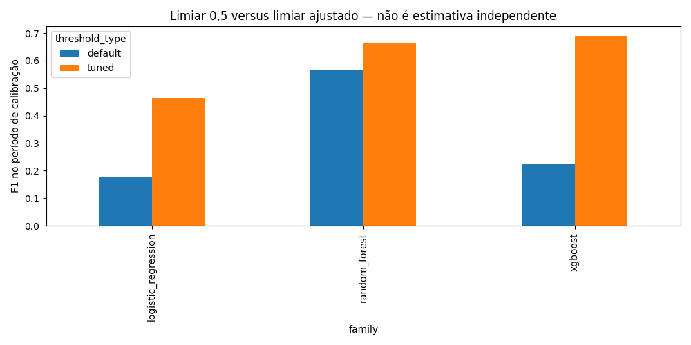

Campeão escolhido exclusivamente pela AP da validação temporal: xgboost. Limiar escolhido por F1 no período de calibração. O teste é descritivo. Escores não são probabilidades calibradas. Os cenários têm alvos diferentes; valores sinalizados não demonstram dinheiro efetivamente protegido.
| partition | rows | positives | prevalence | start | end |
|---|---|---|---|---|---|
| development | 1396047 | 6883 | 0.004930 | 2024-01-01T03:00:00+00:00 | 2024-01-14T15:00:00+00:00 |
| calibration | 203777 | 701 | 0.003440 | 2024-01-14T16:00:00+00:00 | 2024-01-16T02:00:00+00:00 |
| test | 400176 | 7792 | 0.019471 | 2024-01-16T03:00:00+00:00 | 2024-02-01T02:59:59+00:00 |
| scenario | run_id | family | candidate | threshold | accuracy | precision | recall | f1 | average_precision | roc_auc | tn | fp | fn | tp |
|---|---|---|---|---|---|---|---|---|---|---|---|---|---|---|
| 2m | 20261123T191917_6d6e226e | logistic_regression | logistic_regression__smotenc_tomek__default | 0.950144 | 0.990599 | 0.769818 | 0.737808 | 0.753473 | 0.799322 | 0.993473 | 390665 | 1719 | 2043 | 5749 |
| 2m | 20261123T191917_6d6e226e | random_forest | random_forest__original__adjusted | 0.325177 | 0.990482 | 0.787415 | 0.700205 | 0.741254 | 0.834584 | 0.991776 | 390911 | 1473 | 2336 | 5456 |
| 2m | 20261123T191917_6d6e226e | xgboost | xgboost__class_weight__default | 0.983485 | 0.993413 | 0.931971 | 0.713809 | 0.808430 | 0.918749 | 0.996806 | 391978 | 406 | 2230 | 5562 |

